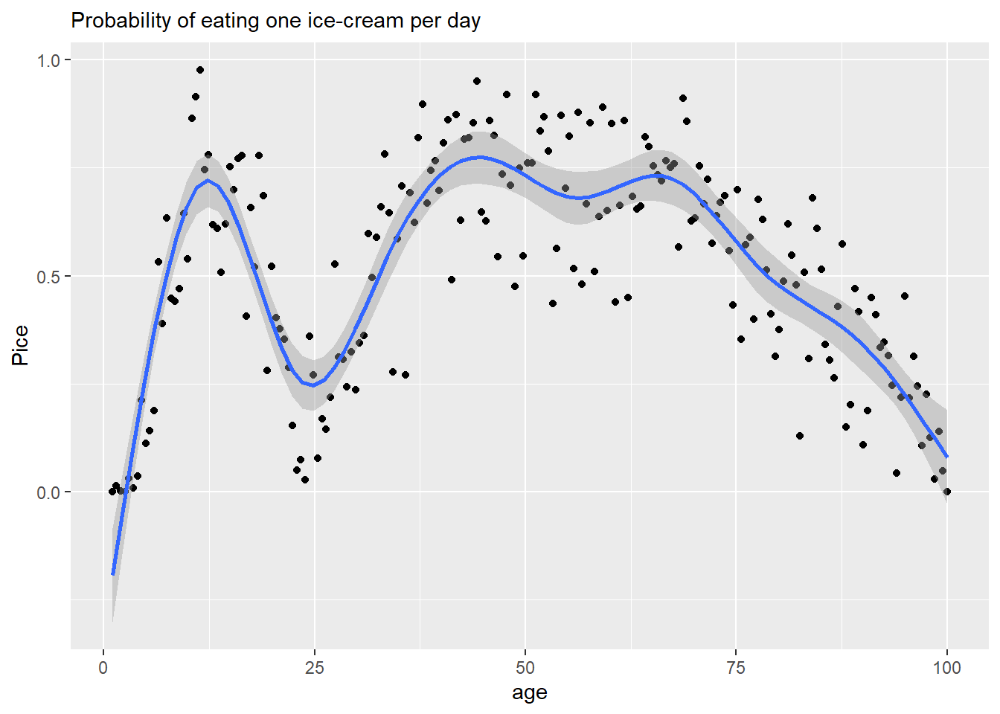

12 Generalized Additive Models as continuous random effects
The purpose of this note is to give an intuition about what generalized additive models (GAMs) are and, more importantly, when can they be handy for causal inferences. Thus, I will leave most mathematical details out28.
12.1 Generalized Additive Models: An Über-brief Introduction
Imagine that you have a (completely made up!) data set shown aboe that describes probability of consuming an ice-cream as a function of age. As you can see, it is twisty curve, so a simpler linear regression won’t do. If we do not have an idea about the process(es) that generated this data, we might at least smooth it to see the underlying relationship more clearly. You can do this in a number of ways using a running median, loess, etc., but we will focus on GAMs as they have an advantage of being (generalized) linear models, which makes it easy to incorporate them into bigger generalized linear models.
The idea of the GAM is to approximate a dependence as a sum of basis functions. In the example below, all basis functions are identical but cover different parts of the space. However, you can have it the other way around with different basis functions covering identical (the entire) space.
In the example below, basis functions are cubic regression splines that are centered on “knots”. Each tent has its own coefficient that determines its height and, also, the transition between knots. A wigliness parameter determines how different coefficients can be, the more different they are, the wigglier will be the line, hence the name. Accordingly, wigliness of zero produces a straight horizontal line (all coefficients must be the same). Wigliness of infinity means that coefficients can take any value and fit the data as closely as possible. As you can see, smoothing makes it much easier to see the underlying relationship. 
12.2 What are GAMs good for?
As mentioned above, GAMs are just smoothers. They approximate a smooth relationship in the data without any knowledge or assumptions about a generative process behind it. As such they have at least two clear usage cases: an exploratory data analysis and generating predictions. In the former case, the shape of the smoothed line might hint at the underlying mechanisms and facilitate development of a causal model. In the latter case, as long as we stick to interpolation, we can use smoothed line to predict unobserved values for future use.
But what about causal inference? Can GAMs be useful for in this case? Yes, they can play a useful and obvious role. But to make this “obvious” obvious, we must take a detour and talk about random factors.
12.3 Covariates / random factors
Imagine that we have data on ice-cream consumption and, among other things, we measured respondents’ eye color. What you find is that people with different eye color tend to consume different amount of ice-cream (on average). Why? It is a made-up example, so I do not know. But it could be genetic, same group of genes being responsible for eye color and ice-cream craving. Or it could be something else. Point is, we do not have a good (or any) causal model of a generative process that would link these two variables. Because of that we are not really interested in this link but we also cannot ignore it. Any systematic relationship that we ignore will we leave unexplained variance that, it turn, will make it harder for us to see a causal effect for predictors that we are interested in. What do we do? We include eye color either as a covariate (fixed effect) or a random effect. For frequentist models, the difference is whether intercept for each group are estimated independently (the former, flat priors, no shrinkage) or by pooling information across groups (the latter, produces shrinkage). For Bayesian models, the difference is between fixed (covariates) and adaptative (random effect) priors. Still, the idea is to stress that we have no idea why this particular variable is correlated with the outcome and that we have no causal generative model.
12.4 GAMs as continuous random factors
Let us get back to ice-cream consumption as a function of age. It is easy to that we are in the same situation as with eye color: We have no idea about the generative process but the dependence is strong and should not be ignored. Thus, we must include age in the bigger model, even if we do not care how the age causes ice-cream consumption. But how can we do it? The relationship is not linear or even monotonic, so we cannot use age as a linear covariate. And, unlike categorical data for eye color, the data is continuous and we do not have well-defined few levels to estimate values for (unless we introduce some artificial discrete levels). Plus, the latter approach would actually ignore the dependence, because will ignore the fact that nearby levels should be more similar than more distance ones. So, what do we do?
It is GAMs to the rescue! By pooling information from nearby data samples, GAMs produce a smooth estimate for each age that can be used in the model. The smooth estimate is, effectively, a continuous random effect! Thus, you should use GAMs whenever you have a continuous variable that is correlated with an outcome, you have no idea about the underlying causal link but the relationship is not simple and monotonic enough to use conventional methods.